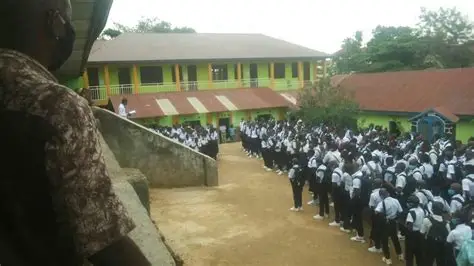
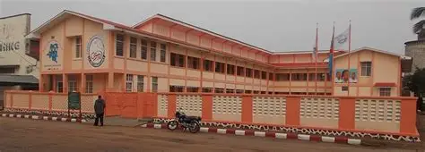
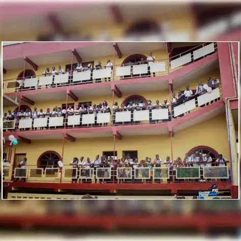
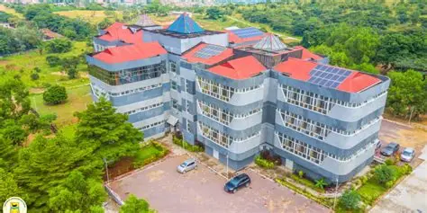

À Propos de Moi
Je m'appelle MAGANGA MBAYO Ornella
Je suis née le 01/09/2006 à Kindu dans la province du Maniema, je suis congolaise de Pére et de Mére; je suis la 3émé fille et enfant d'une famille de 7 enfants; J'ai 2 grandes soeurs, 2 petites soeurs et 2 petits fréres.
Mon Parcours
Mon parcours scolaire a commencé à l’âge de 5 ans au Complexe Scolaire Furaha, une école conventionnée catholique dirigée par les Sœurs Religieuses. De la 3ème maternelle à la 5ème primaire, j’ai appris les bases de la rigueur et de la discipline.

À 9 ans, un premier tournant : j’ai quitté ma ville pour rejoindre la ville de Kalemie, dans la province du Tangagnika. C’est là que j’ai terminé ma 5ème primaire au Complexe Scolaire Le Bon Berger.

À 10 ans, cap sur la ville de Kananga au Complexe Scolaire La Reconnaissance. J’y ai obtenu mon Certificat de Fin d’Études Primaires(Tenafep). J’ai ensuite enchaîné de la 6ème primaire à la 2ème des Humanités.

La vie m’a ensuite conduite à Kinshasa, la capitale de la République Démocratique du Congo. J’y ai poursuivi mes Humanités scientifiques, de la 1ère à la 5ème, en Maths-Physique au Groupe Scolaire Saint Damien, une autre école conventionnée catholique.

Pour ma 6ème des Humanités, j’ai intégré le Lycée Madame de Sévigné/Pompage où j’ai obtenu mon Diplôme d’État avec 63%.

Animée par la passion de la technologie, j’ai commencé ma Licence en Sciences Informatiques à l’Université Catholique du Congo(UCC) à seulement 17 ans. Aujourd’hui, je suis étudiante en L2 Sciences Informatiques à l’Université Catholique du Congo/Mont Ngafula.

De ville en ville, d’école en école, j’ai appris à m’adapter, à travailler et à ne jamais lâcher. Je suis convaincue que chaque étape m’a préparée pour construire et impacter dans le domaine de l’informatique.